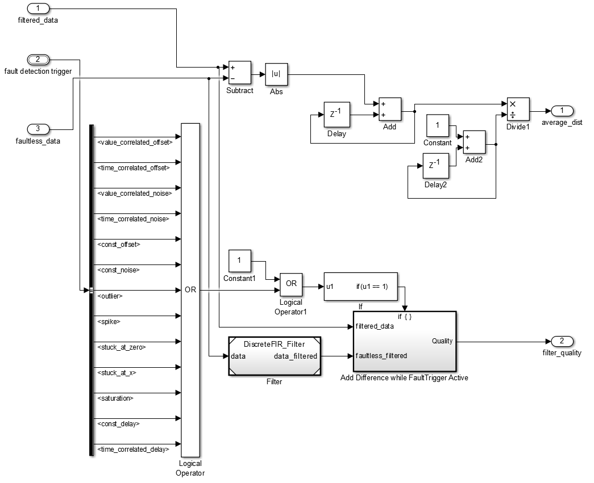

filter_quality_check_simple.slx
This model evaluates a filter, to get information how the filter performs. The model return a filter quality value and a average distance. In general it is appropriate to build your own filter_quality_check function because the quality calculation depends on the specific problem you want to solve.
Contents
Input Values
- filtered_data: The output of the filter.
- fault detection trigger: The trigger bus with information which fault occurs on which time.
- faultless_data: The input of the filter without faults.
average_dist
This value is the average difference between the filtered_data and the faultless_data. It indicates, how close are the filtered_data to the faultless_data. For example, if the filter leads to a high permanent offset the average_dist will be high (bad).
filter_quality
We want a quality value which ignore drifts or permanent offsets introduced by the filter. Therefore we filter the faultless_data. So the filtered faultless_data and the filtered faulty data have the same influence caused by the filter. For example an offset. The difference between this values indicates the quality. There are some filters wich start drifting if a fault occurs. To minimize such influence on the quality value, the difference is just mesured if a fault is activated in this moment. The information is deliverd by the fault detection trigger. To get a value independet from the length of the dataset, we take the average value. The difference between this two datasets is zero if the filter eliminate every fault. The smaller the filter_quality, the better is the filter.
Build your own quality_check
If you decide to build your own quality check it is necessary that the input and output data have the same structure like filter_quality_check_simple.slx. Than you can use the set_filter_evaluation function to set the new quality check. You have also to change the set_filter.m file! If you press now the design filter button, the filter is designed with respect to the new quality value. Please note that the suggested solution contain the old quality values until you add every filter again (add_filter).
filter_quality_check_simple.slx
